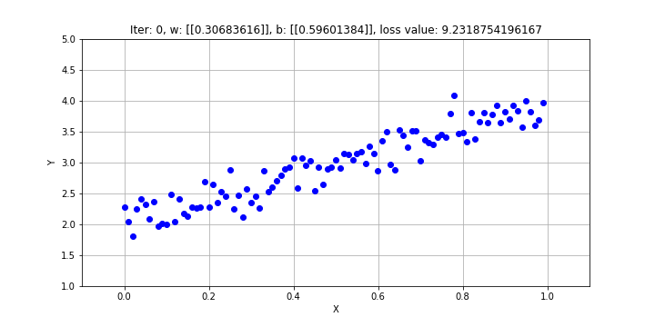

Problem
Hôm nay, khi thực hiện code thử linear regression , lúc cần visualization lại cách mà gradient điều chỉnh rồi fit dần dần như thế nào, mình cần 1 cái ảnh gif để mình họa. Vấn đề là, matpltlib, công cụ visualization quen thuộc trong python, thì có 1 cách làm ảnh gif rất bất tiện.
fig, ax = plt.subplots()
x = np.arange(0, 2*np.pi, 0.01)
line, = ax.plot(x, np.sin(x))
def animate(i):
line.set_ydata(np.sin(x + i/10.0)) # update the data
return line,
# Init only required for blitting to give a clean slate.
def init():
line.set_ydata(np.ma.array(x, mask=True))
return line,
ani = animation.FuncAnimation(fig, animate, np.arange(1, 200), init_func=init, interval=25, blit=True)
Vấn đề của hàm FuncAnimation là hàm animate có vẻ không phù hợp cho các ảnh gif có độ tùy chỉnh cao, và nói chung đọc qua thì mình cảm thấy nó hơi phức tạp quá mức cần thiết.
Cách giải quyết
Để tạo ra ảnh gif, ta có thể lưu 1 list các ảnh, rồi kết nối các ảnh lại thành ảnh gif. Package sử dụng là imageio. Ta dùng hàm mimsave để tạo ra file gif từ 1 list các hình tĩnh.
# some lines not related to visualization
def plot_for_offset(x, y, x_prime, w, b, i, loss_value):
# Data for plotting
fig, ax = plt.subplots(figsize=(10,5))
ax.plot(x, y, 'bo', x_prime, x_prime * w[0,0] + b[0,0])
ax.grid()
ax.set(xlabel='X', ylabel='Y',
title="Iter: {}, w: {}, b: {}, loss value: {}".format(i, w, b, loss_value))
ax.set_xlim(-0.1, 1.1)
ax.set_ylim(1, 5)
# IMPORTANT ANIMATION CODE HERE
fig.canvas.draw() # draw the canvas, cache the renderer
image = np.frombuffer(fig.canvas.tostring_rgb(), dtype='uint8')
image = image.reshape(fig.canvas.get_width_height()[::-1] + (3,))
return image
image_list = []
iter_list = [0, 1, 2, 3, 4, 6, 9, 14]
epsilon = 5e-3
with tf.Session() as sess:
sess.run(init_op)
loss_value = 1
i = -1
while loss_value > epsilon:
i += 1
_, loss_value = sess.run((train, loss))
b = biases.eval()
w = weights.eval()
if i in iter_list or (i + 1) % 10 == 0:
image_list.append(plot_for_offset(x, y, x_prime, w, b, i, loss_value))
if i > 200:
break
imageio.mimsave('./linear_regression_fitting.gif', image_list, fps=1.5)
Tada, và sản phẩm của chúng ta là:

Sử dụng gradient để fit linear regression
Tham khảo
- https://ndres.me/post/matplotlib-animated-gifs-easily/